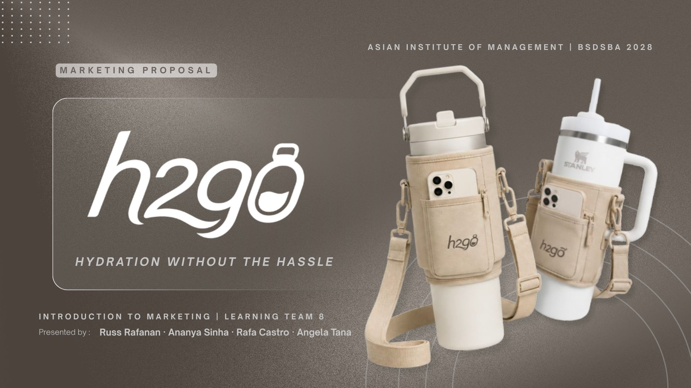
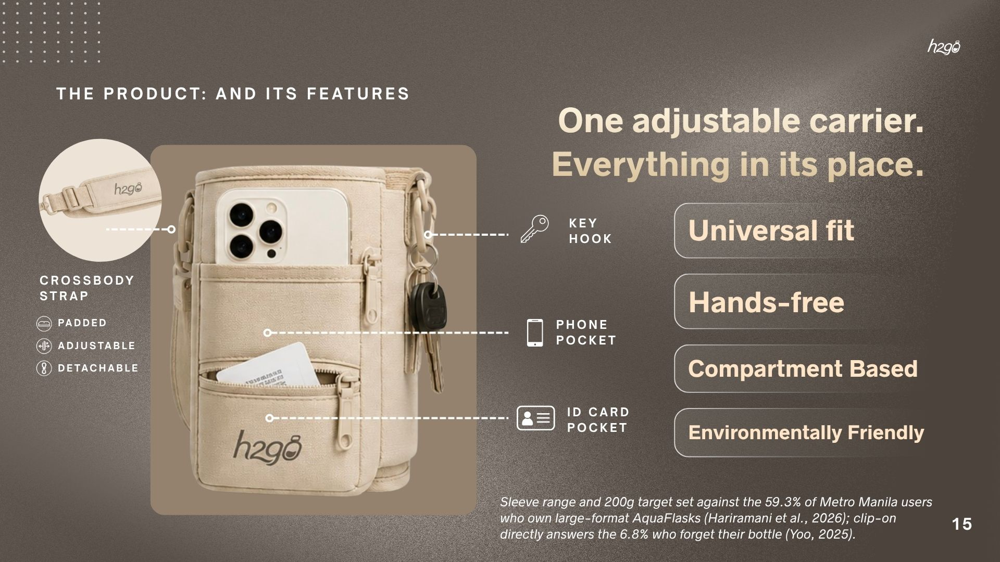
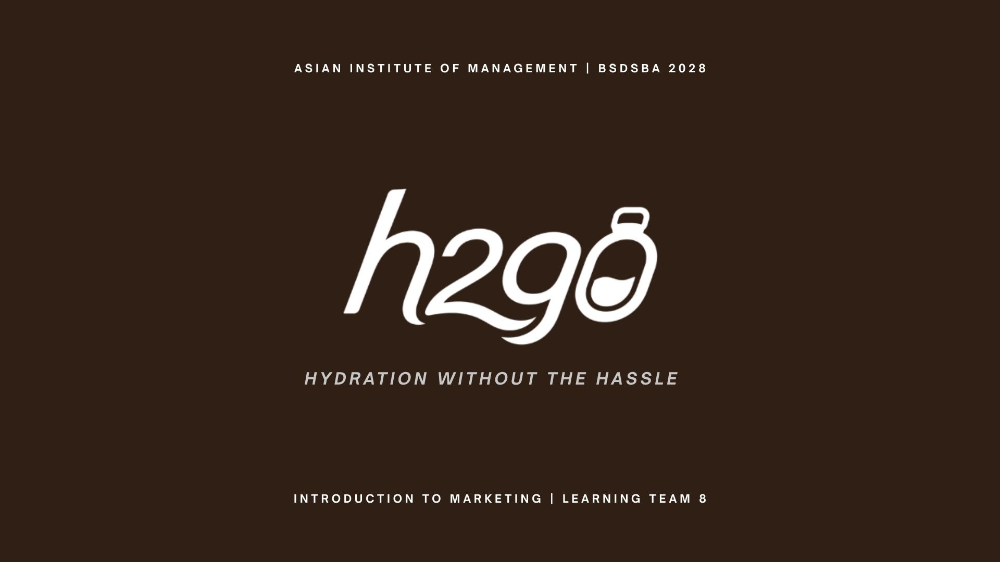

H2GO | Product & Marketing Strategy
July 2026
Developed a marketing pitch for a multipurpose water bottle carrier concept for college students and young professionals, using secondary market research to identify consumer needs and shape product positioning.
The OutputA presentation pitch detailing market validation, consumer personas, and product positioning strategy.
Kanin Na | Rice Yield Anomaly Forecasting
May 2026
Developed a Machine Learning Model to forecast rice yield changes across 3 Philippine provinces, analyzing historical weather and agricultural data. Generated forecasts to help identify potential shortfalls and support agricultural planning.
The OutputA presentation based on machine learning outlining predictive modeling results, data pipeline mechanics, and agricultural impact forecasts.
Student Performance Analytics
April 2026
Analyzed academic performance data from 6,607 students across 20 variables to identify factors influencing academic outcomes and translated findings into an interactive dashboard.
The OutputA Tableau dashboard featuring multi-variable filtering, demographic correlation charts, and key student performance metrics.
FH Moms x Wadhwani Foundation | Mom Upskilling Campaign
July 2025
Created an approachable social media campaign that promoted career upskilling opportunities for Filipino mothers. The content translated the program's benefits into clear, encouraging messages tailored to the FH Moms community.
The OutputA three-post social media campaign designed to raise awareness, encourage engagement, and connect mothers with accessible upskilling opportunities.